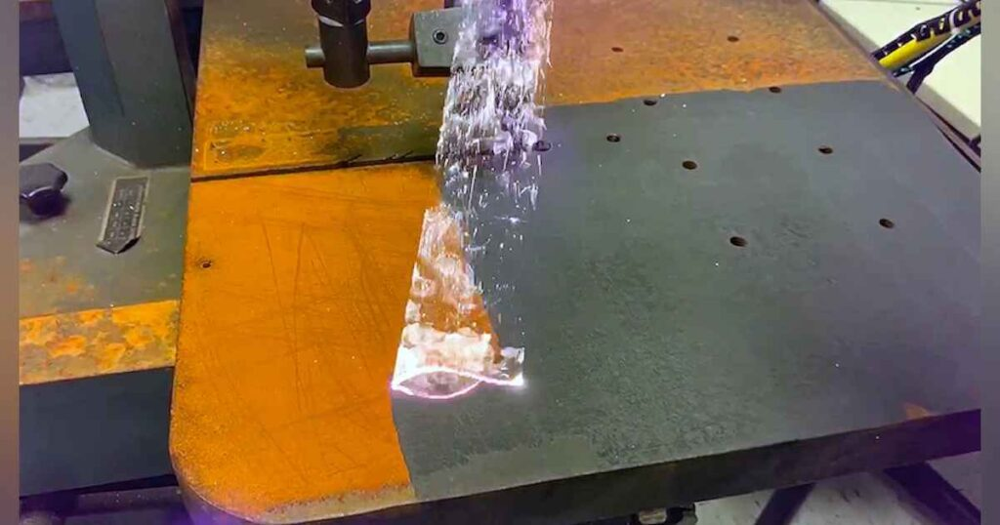

La limpieza con láser y la limpieza con hielo seco son dos tecnologías avanzadas que han revolucionado la industria de la limpieza industrial. En este artículo, exploraremos los beneficios de ambas técnicas y realizaremos una comparativa detallada, con ejemplos concretos de su aplicación en diferentes sectores. Además, destacaremos cómo Nano Nex, líder en soluciones de limpieza, puede ayudar a tu empresa a alcanzar los estándares más altos de limpieza industrial.

Beneficios de la Limpieza con Láser:
La limpieza con láser es una técnica que ha ganado popularidad en diversas industrias gracias a sus numerosos beneficios:
- Precisión Inigualable: La limpieza con láser permite una eliminación extremadamente precisa de contaminantes, recubrimientos y óxido sin causar daños a la superficie original. Esto es fundamental en industrias como la aeroespacial y la electrónica.
- Versatilidad: Esta técnica es adecuada para una amplia variedad de materiales, desde metales hasta plásticos y cerámicas, lo que la convierte en una opción versátil para sectores como la automoción y la fabricación de maquinaria.
- Eficiencia y Rapidez: La limpieza con láser es altamente eficiente y reduce el tiempo de inactividad de la maquinaria, lo que mejora significativamente la productividad.
- Ecoamigable: Al no utilizar productos químicos ni generar residuos perjudiciales, la limpieza con láser es una opción respetuosa con el medio ambiente, un aspecto importante en la actualidad.
Beneficios del Hielo Seco:
La limpieza con hielo seco también ofrece ventajas notables en el ámbito industrial:
- No Daña las Superficies: Al igual que la limpieza con láser, el hielo seco es no abrasivo y no causa daños a las superficies, lo que lo convierte en una opción segura para equipos delicados.
- Limpieza en Frío: El hielo seco elimina eficazmente contaminantes como aceite, grasa y residuos al congelarlos, lo que facilita su eliminación. Esto es especialmente útil en la industria alimentaria.
- Seguridad y Limpieza: La limpieza con hielo seco es segura y no deja residuos químicos, lo que la hace ideal para aplicaciones en la industria farmacéutica y alimentaria.
Comparativa: Limpieza con Láser vs. Hielo Seco:
Industria Automotriz:
La limpieza con láser es perfecta para eliminar pintura, recubrimientos y óxido en carrocerías y componentes metálicos, mientras que el hielo seco es ideal para eliminar grasa y aceite en motores y componentes.
Industria Alimentaria:
Ambas técnicas son seguras para la limpieza de equipos, pero el hielo seco se destaca en la eliminación de contaminantes en transportadores y maquinaria debido a su limpieza en frío.
Industria Aeroespacial:
La limpieza con láser es esencial para preparar superficies críticas en componentes aeroespaciales, mientras que el hielo seco es valioso en la eliminación de lubricantes y residuos en sistemas de aeronaves.
Industria Electrónica:
La precisión de la limpieza con láser la convierte en la elección preferida para eliminar contaminantes en placas de circuitos impresos, mientras que el hielo seco es eficaz en la limpieza de componentes electrónicos sin dañarlos.
Nano Nex: Líder en Soluciones de Limpieza Industrial
Nano Nex se destaca como líder en el campo de la limpieza con láser y hielo seco. Con un compromiso constante con la innovación y la calidad, ofrece soluciones de limpieza personalizadas que satisfacen las necesidades de clientes en diversas industrias. Con tecnología de vanguardia y un equipo altamente capacitado, Nano Nex es la elección ideal para optimizar la eficiencia de limpieza en tu empresa.
Conclusión: La Elección Correcta para Tu Industria
Tanto la limpieza con láser como la limpieza con hielo seco tienen sus propios beneficios y aplicaciones específicas en la industria. La elección adecuada dependerá de las necesidades de limpieza de tu empresa y de los materiales a tratar. Con Nano Nex como tu socio en limpieza, puedes estar seguro de que estás eligiendo la mejor solución para mantener la calidad y la eficiencia en tu proceso de producción.
Para obtener más información sobre las soluciones de limpieza con láser y hielo seco de Nano Nex, visita su página web en https://limpiezaincendiosnanonex.es/limpieza-con-laser/ y descubre cómo pueden ayudarte a alcanzar los estándares más altos de limpieza en tu industria.